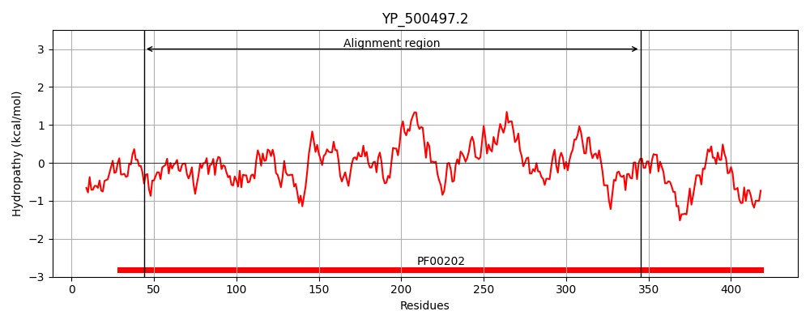
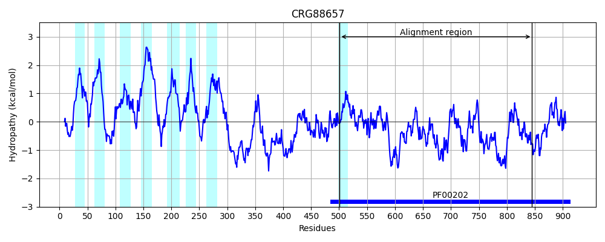
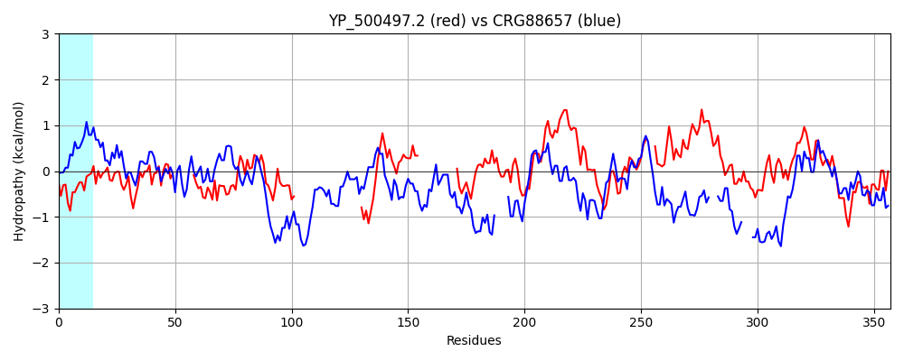

Hit Accession: CRG88657
Hit TCID: 9.B.313.1.2
Hit Description: gnl|BL_ORD_ID|2913 gnl|TC-DB|CRG88657|9.B.313.1.2 4-aminobutyrate aminotransferase / (S)-3-amino-2-methylpropionate transaminase [Talaromyces islandicus]
Mach Len: 357
e:0.000000
Query TMS Count : 0
Hit TMS Count: 8
TMS-Overlap Score: 0.000000
Predicted Substrates:None
BLAST Alignment:
Score: 143 , Bit scores: 59 bits, E-value: 1.5e-09, Alignment length: 357, Percentage identity: 24
Query: 44 GAYLYDVDGNKFIDYLQAYGPIITGHAHPHITKAIQEQAAKGVLFGTPTE--------LEIEFSKKLRDAIPSLEKIRFVNSGTEAVMTTIRVARAYTKRNK----------------------------IIKFAGSYHGHSDLVLVAAGSGPSQ----------------LGSPDSAGVPESVAREVITVPFNDINAYKEAIEFWGDEIAAVLVEPIVGNFGMVMPQPGFLEEVNEISHNNGTLVIYDEVIT---AFRFHYGAAQDLLGVIPDLTAFGKIVGGGLPIGGYGGRQDIMEQVAPLGPAYQAGTMAGNPLSMKAGIALLEVLEQDGVYEKLDSLGQQLEEGLLKLIEKH 345
G YL D+DGN +D I G+ +PH+ A+ L P I + LR A L ++ +G++A T + A Y ++ + I+ F ++HG L S P L P V E+ A E + + I+ + + +AAV+VEPI G P F + + +I+ N L I DEV T A + L PDL F K G Y G + P P Q T G+P A+LE +E G+ E + G L GL L +K+
Sbjct: 501 GNYLVDLDGNVLLDVYAQIASIPVGYNNPHLAAAVNTPEMVRALIDRPALGNFPSADWSNILKTGLLRAAPKGLNQVFTALAGSDANETAYKAAFMYRRQQERGGANVDFSDADTTSAMLNQSPGSPNMSIMSFKSAFHGRLFGSLSTTRSKPIHKLDIPAFDWPQAPFPALKYPLEEHVQENAAEEK-----RCLAEAERIIKEFHNPVAAVVVEPIQSEGGDNHASPAFFQGLRDITKRNNVLFIVDEVQTGVGATGKFWAHDHWNLQSPPDLVTFSK---KAQTAGYYYGN----PALRPNKPYRQFNTWMGDPARAILFRAILEEIESKGLVENTAATGDYLYNGLESLAQKY 845 | Protein Hydropathy Plots: |
|---|
|  |  |
Pairwise Alignment-Hydropathy Plot:
|
|---|
|  |